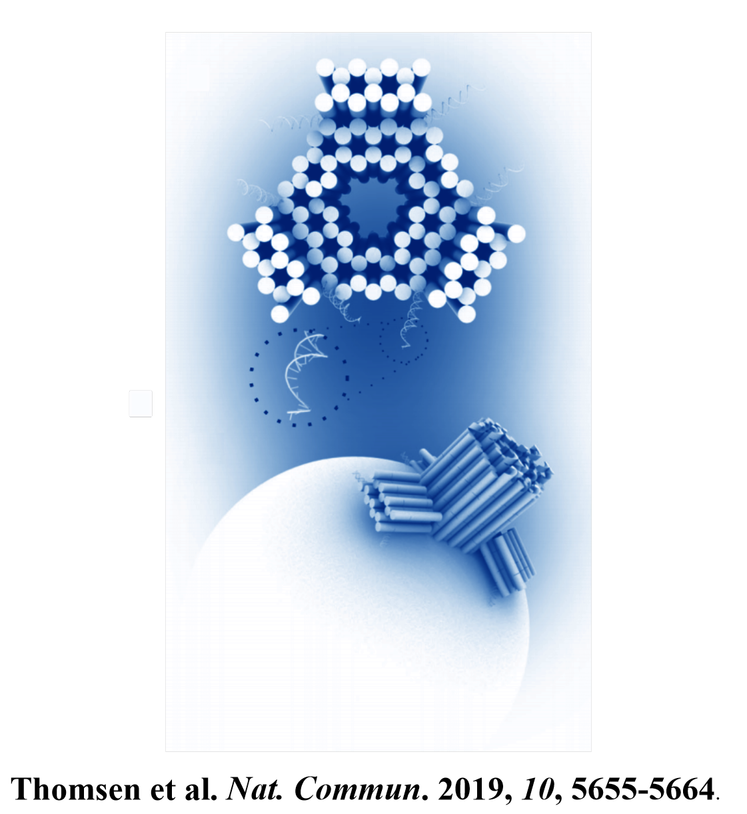
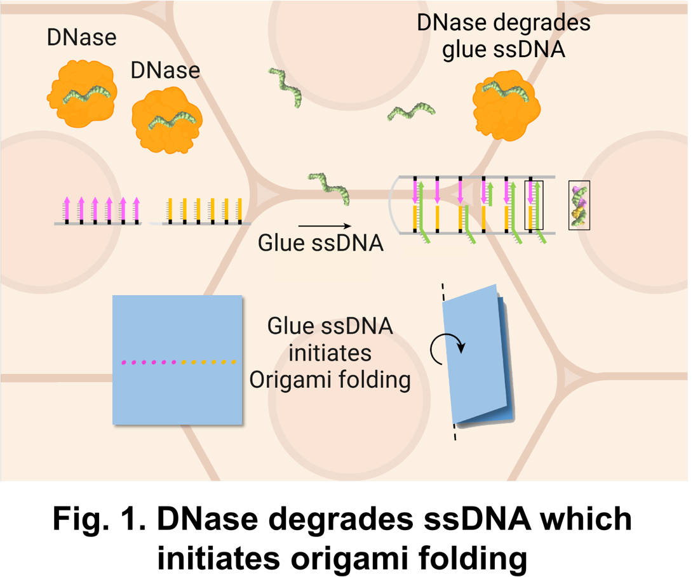
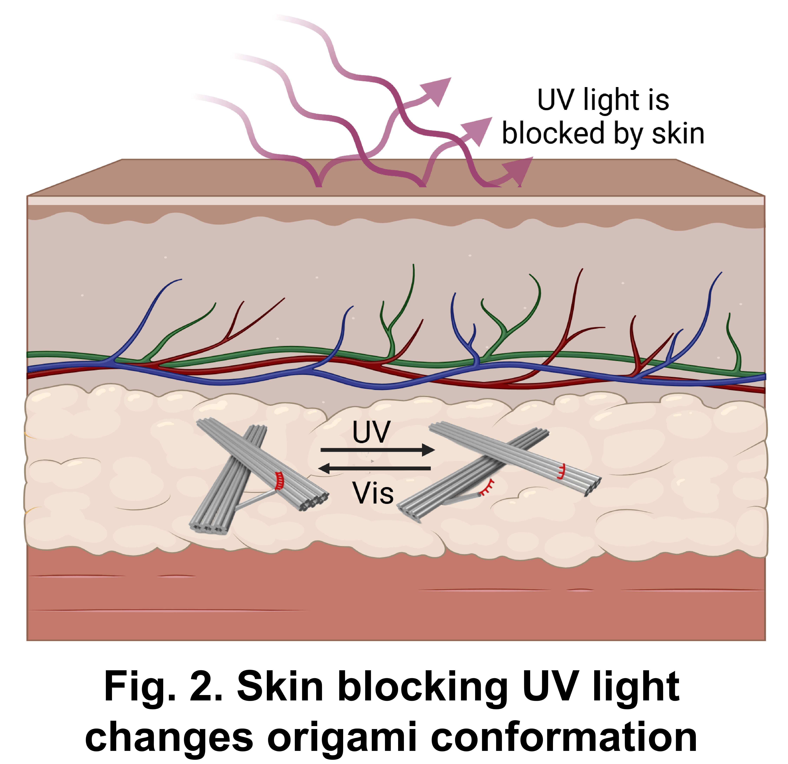
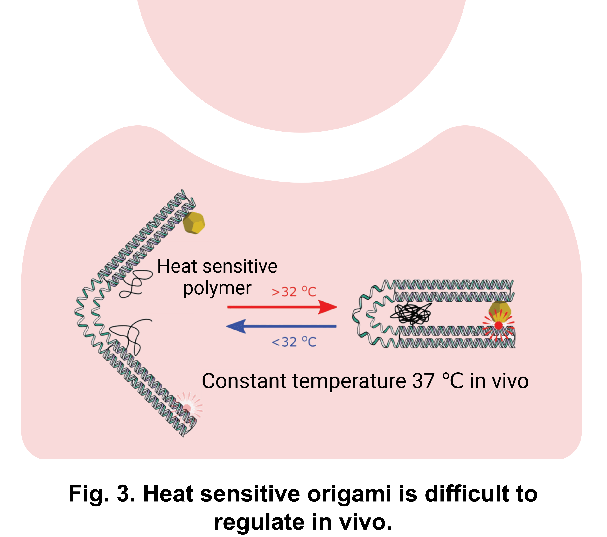
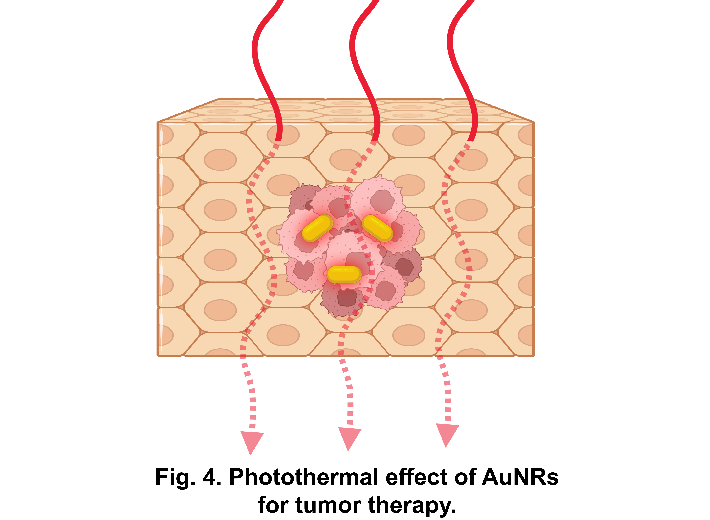
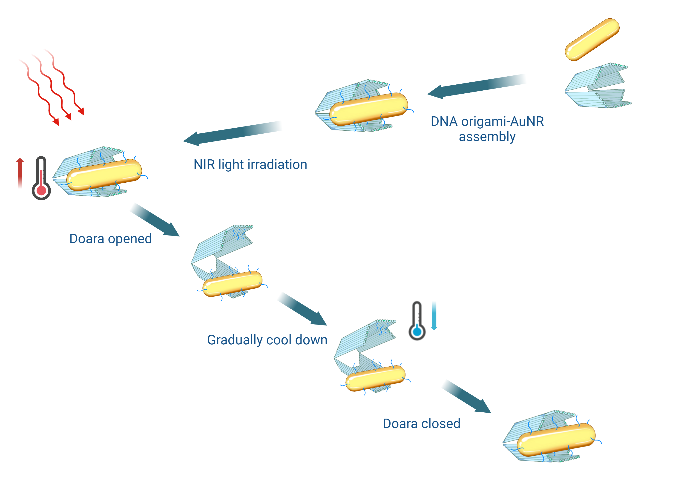

Background
From nanorobot to DNA origami and “switch”
Nanorobots offer a solution for programmable and precise manipulation at the microscopic scale which are highly attractive for various applications like medical Imaging, microscale surgery and targeted delivery[1].
To date, Nanorobots can be composed of materials such as metals[2], polymers[3], and biological macromolecules.[4] Among them, nanorobots that constructed from biomacromolecules make molecular-level operations within the human body possible due to their biocompatibility, endowing them with significant application potential in the field of biomedicine.[5]
DNA origami technology, with its customizable morphology, nanometer-scale precision, and spatial addressability, serves as one of the pathways for constructing nanorobots using biomacromolecules.[6] In fact, many researches have utilized DNA origami technology to construct programmable nanorobots capable of drug delivery[7], molecular computation[8] and the detection of target substances and so on. To drive the motion of nanorobots and enable them to perform tasks such as drug release[10], reseachers utilized the actuating components (we called it “switch”) within the nanorobots, such as DNA strand displacement reaction[11], i-motif[12] and so on.

Problem
How to control the “switches” of nanorobots in vivo?
One of the most frequently employed schemes for dynamically regulating DNA origami robots involves the introduction of DNA hybridization strands complementary to the single-strand components within the DNA origami, allowing for hybridization with the DNA origami. Subsequently, the addition of complementary strands to these DNA hybridization strands is used to dehybridize, thereby controlling the conformation of the DNA origami.[13] This approach necessitates the continuous addition of hybridization or dehybridization
strands to the system, maintaining them at a high concentration, and the conformation change is time-consuming, typically ranging from tens of minutes to several hours.[14] In the human body, with its rapid metabolism, it is challenging to maintain hybridization strands at a high concentration, and DNA enzymes can degrade these strands, rendering such regulation impractical within the human body[15].

Other “switches” include pH-responsive[16], ultraviolet (UV) light-responsive[17], and thermally-driven mechanisms.[18] Among them, the UV light response utilizes the trans-cis isomerization of azobenzene to trigger the denaturation and renaturation of DNA, allowing for repeatable regulation of the conformation of DNA nanostructures.[17] The time required for conformation change is relatively short. Given the limited penetration capability of UV light in human tissue,this restricts the regulation of DNA nanorobots within the human body.[19]


Thermally-driven methods can produce significant conformation changes and are simple and rapid in their operation.[20] While their application in the human body is limited due to the difficulty of heating the entire system within a living organism.
As a consequence, the programmable control of DNA nanorobots within the human body remains a challenge.
Idea
What is Gold nanorods?
Gold nanorods (AuNRs), with their good biocompacity, high photothermal conversion efficiency[21] and the excitation wavelength that can be tuned based on the aspect ratio of AuNRs to fall within physiological “water window” in the near-infrared region of the spectrum[22], have been used for biological applications, such as photothermal tumor treatment and light-responsive drug delivery.[23]

Therefore, if gold nanorods' photothermal effect is utilized as a dynamic control "switch" for the nanorobots, their good biocompatibility and the ability to remotely control through tissue will provide a new research avenue for the application of nanorobots in the human body.
Solution
About DOARA (Dna Origami Au nanoRod Assembly)
In this study, we utilize AuNRs as carrier for photothermal actuation, leveraging the heat generated by the AuNRs under illumination with specific wavelengths of light as a driving force to dynamically modulate the conformation of DNA nanostructures.

We employ large-sized AuNRs with an excitation wavelength of 808 nm in the near-infrared region, which provides good tissue penetration and efficient photothermal effects.[22] DNA is conjugated on the surface of the AuNRs and assembled with DNA origami to form DOARA.
Under illumination with 808 nm near-infrared light, the AuNRs, acting as photothermal conversion medium, convert light into heat, denaturing the DNA connected with the DNA origami, and thus achieving dynamic changes in the conformation of DOARA.
The advantages of this approach include rapid response and reversible conformational changes controlled by photothermally induced DNA denaturation or renaturation. It uses light exposure as a response signal rather than pH or ion concentration, because it is relatively less restricted by solution conditions, and utilizes highly tissue-penetrating near-infrared light as a dynamic response signal, allowing for remote control of DOARA without tissue damage.[22]
References
[1] Li J, Esteban-Fernández de Ávila B, Gao W, Zhang L, Wang J. Micro/Nanorobots for Biomedicine: Delivery, Surgery, Sensing, and Detoxification. Sci Robot. 2017;2(4):eaam6431. doi:10.1126/scirobotics.aam6431.
[2] Gu Z, Zhu R, Shen T, et al. Autonomous nanorobots with powerful thrust under dry solid-contact conditions by photothermal shock. Nat Commun. 2023;14(1):7663. Published 2023 Nov 24. doi:10.1038/s41467-023-43433-6.
[3] Yang M, Zhang Y, Mou F, et al. Swarming magnetic nanorobots bio-interfaced by heparinoid-polymer brushes for in vivo safe synergistic thrombolysis. Sci Adv. 2023;9(48):eadk7251. doi:10.1126/sciadv.adk7251.
[4] Li H, Gao J, Cao L, et al. A DNA Molecular Robot that Autonomously Walks on the Cell Membrane to Drive Cell Motility. Angew Chem Int Ed Engl. 2021;60(50):26087-26095. doi:10.1002/anie.202108210.
[5] Yang M, Zhang Y, Mou F, et al. Swarming magnetic nanorobots bio-interfaced by heparinoid-polymer brushes for in vivo safe synergistic thrombolysis. Sci Adv. 2023;9(48):eadk7251. doi:10.1126/sciadv.adk7251.
[6] Thomsen RP, Malle MG, Okholm AH, et al. A large size-selective DNA nanopore with sensing applications. Nat Commun. 2019;10(1):5655. Published 2019 Dec 11. doi:10.1038/s41467-019-13284-1.
[7] Zhang Q, Jiang Q, Li N, et al. DNA origami as an in vivo drug delivery vehicle for cancer therapy. ACS Nano. 2014;8(7):6633-6643. doi:10.1021/nn502058j.
[8] Wang K, Huang Q, Elshaer MR, Knorr B, Chaikin P, Zhu G. Tri-state logic computation by activating DNA origami chains. Nanoscale. 2024;16(25):11991-11998. Published 2024 Jun 27. doi:10.1039/d3nr06010a.
[9] Douglas SM, Bachelet I, Church GM. A logic-gated nanorobot for targeted transport of molecular payloads. Science. 2012;335(6070):831-834. doi:10.1126/science.1214081.
[10] Ijäs H, Shen B, Heuer-Jungemann A, et al. Unraveling the interaction between doxorubicin and DNA origami nanostructures for customizable chemotherapeutic drug release. Nucleic Acids Res. 2021;49(6):3048-3062. doi:10.1093/nar/gkab097.
[11] Luo T, Fan S, Liu Y, Song J. Information processing based on DNA toehold-mediated strand displacement (TMSD) reaction. Nanoscale. 2021;13(4):2100-2112. doi:10.1039/d0nr07865d.
[12] Majikes JM, Ferraz LCC, LaBean TH. pH-Driven Actuation of DNA Origami via Parallel I-Motif Sequences in Solution and on Surfaces. Bioconjug Chem. 2017;28(7):1821-1825. doi:10.1021/acs.bioconjchem.7b00288.
[13] Kim M, Lee C, Jeon K, et al. Harnessing a paper-folding mechanism for reconfigurable DNA origami. Nature. 2023;619(7968):78-86. doi:10.1038/s41586-023-06181-7.
[14] Simmel FC, Yurke B, Singh HR. Principles and Applications of Nucleic Acid Strand Displacement Reactions. Chem Rev. 2019;119(10):6326-6369. doi:10.1021/acs.chemrev.8b00580.
[15] Shen J, Zhao Y, Pham NT, et al. Deciphering the mechanism of processive ssDNA digestion by the Dna2-RPA ensemble. Nat Commun. 2022;13(1):359. Published 2022 Jan 18. doi:10.1038/s41467-021-27940-y.
[16] Ryssy J, Natarajan AK, Wang J, et al. Light-Responsive Dynamic DNA-Origami-Based Plasmonic Assemblies [published correction appears in Angew Chem Int Ed Engl. 2022 Sep 19;61(38):e202210394. doi: 10.1002/anie.202210394]. Angew Chem Int Ed Engl. 2021;60(11):5859-5863. doi:10.1002/anie.202014963.
[17] Kuzyk A, Yang Y, Duan X, et al. A light-driven three-dimensional plasmonic nanosystem that translates molecular motion into reversible chiroptical function. Nat Commun. 2016;7:10591. Published 2016 Feb 2. doi:10.1038/ncomms10591.
[18] Crocker K , Johnson J , Pfeifer W , Castro C , Bundschuh R . A quantitative model for a nanoscale switch accurately predicts thermal actuation behavior. Nanoscale. 2021;13(32):13746-13757. doi:10.1039/d1nr02873a.
[19] Finlayson L, Barnard IRM, McMillan L, et al. Depth Penetration of Light into Skin as a Function of Wavelength from 200 to 1000 nm. Photochem Photobiol. 2022;98(4):974-981. doi:10.1111/php.13550.
[20] Johnson JA, Dehankar A, Winter JO, Castro CE. Reciprocal Control of Hierarchical DNA Origami-Nanoparticle Assemblies. Nano Lett. 2019;19(12):8469-8475. doi:10.1021/acs.nanolett.9b02786.
[21] Zheng J, Cheng X, Zhang H, et al. Gold Nanorods: The Most Versatile Plasmonic Nanoparticles. Chem Rev. 2021;121(21):13342-13453. doi:10.1021/acs.chemrev.1c00422.
[22] Chan MH, Chang YC. Recent advances in near-infrared I/II persistent luminescent nanoparticles for biosensing and bioimaging in cancer analysis. Anal Bioanal Chem. 2024;416(17):3887-3905. doi:10.1007/s00216-024-05267-z.
[23] Dreaden EC, Alkilany AM, Huang X, Murphy CJ, El-Sayed MA. The golden age: gold nanoparticles for biomedicine. Chem Soc Rev. 2012;41(7):2740-2779. doi:10.1039/c1cs15237h.